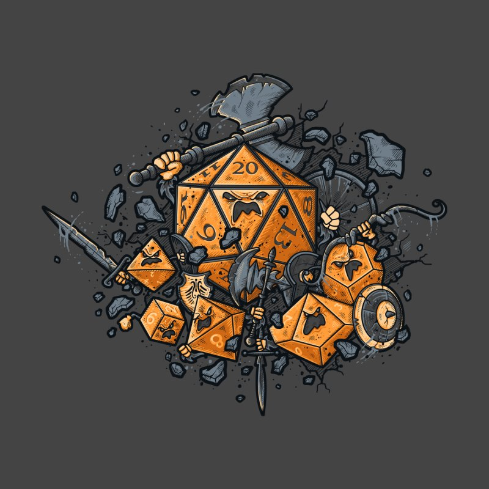

Average DND player

What dice feel like

Barbarian: Ancestral Guardian: Bear Totems are still the kings and queens of damage resistance, being far more difficult to take down. Ancestral Guardians are the other side of that coin, being extremely potent at keeping the other members of the party alive instead of just themselves. The flavor is so freaking cool, and I love how this translates into the mechanics. You literally can see how the spirits of the ancestors are harrying your foes and protecting your allies, focusing your enemies on facing their chosen champion. Flat damage reduction is fantastic as a reaction, and later on you get to punish your enemy even more by having the spirits automatically damage the source of the reduced damage. Oh and that level 10 utility feature is amazing. Awesome scouting potential that fits perfectly and interestingly with the theme and power set. Storm Herald: I’ve never been super excited about this one but it’s been a popular option from what Ive seen. An auto damage aura is really nice, but it’s not friendly. The lightning one is more targeted, but less potent overall, I feel. And the temp HP one is actually pretty cool. Some more hit points is nice for everyone. The secondary features give you a damage resistance and the third feature spreads that resistance to friends, which helps out the auto-damaging fire aura some. And the final feature grants some cool stuff as well, like even more fire damage, knocking an opponent over as with a wave, and freezing your opponents in place. Very cool idea, your rage literally invites the environment to storm and rage with you. This is the Land Druid Variant of Barbarians, which is neat, taking a portion of the land or environment with you fight. What really hurts this is the bonus action to activate the aura each round. Man, that stings. When comparing it to all of the other available options, it seems like the low man on the totem pole. Still viable, certainly, and cool flavor, but the effects of just about every other subclass seem stronger. Zealot: I’ll admit that this has always been my favorite and I personally think it might be the mechanically strongest of these three. This essentially adds a “mini-Smite” feature on your rage, but it’s every single turn, and scaled reasonably well. Great single target damage feature. The next bit is flat-out amazing in any party with a cleric or access to one or anyone with resurrection spells. One of the biggest built in “balance factors” for resurrection is wealthy material components that can be rare to find if your DM or group is unhappy with how trivial death can seem in 5e. This takes that out of the equation. It’s a really neat flavorful ability that you hope doesn’t have to be used much, but it’s stellar when it does come into play. Zealous Presence is quite fantastic as well. It’s only one round, but advantage is strong, and giving it to all of your allies is superb. The final ability is another “defensive” ability, but really it just lets you keep trucking after 0 HP. Again, strong flavor and unique mechanics. I think of Valkyries, Warriors Empowered by the gods to defy death and usher in those warriors to the exalted halls of Valhalla, or an immortal warrior resurrected every few centuries when a major war breaks out by a certain civilization. Warlock: Celestial: I’m glad this exists. In the same way that I enjoy subclasses that evoke a “darker, more evil” theme, I think this fills a unique niche within the Warlock class concept. This is the “stereotypically good” Warlock. An angel, a titan/demigod, a Unicorn, and a ki-rin are all great inspirations for a being of pure light and bliss that might make a Pact. The extra healing isn’t as good as Dreams Druid, but it’s still very nice. The extra cantrips are always great too. Radiant Soul makes this more effective, since you can add your charisma modifier to any radiant or fire damage you do. Celestial Resilience really adds to the overall hp to you and your party as well. An excellent support feature. Searing Vengeance is an amazing feature to bounce back from unconsciousness, regaining a ton of hp and providing damage to all your enemies within range without fear of friendly fire. Overall it’s a mixed bag, but it’s a very potent mixed bag that adds a lot of unique features to the Warlock class. Hexblade: To begin with, I want to talk about flavor. I love that it’s hinted heavily that it’s the Raven Queen because I find that fitting and interesting. But any shadowy entity that crafts weapons or items of power can make a Pact like this. My immediate thought here is Sauron. He is associated with darkness, necromancy (to a degree, as “The Necromancer”), and most importantly forging items of power that he used as binding contracts to other beings. With that aside, this subclass is mechanically pretty potent for melee Charisma based spellcasters. You get to fold in your casting stat as your melee Attack and damage stat and that’s unique in 5e so far (excluding spells like shillelagh). It works without Pact of the Blade, but taking Pact of the Blade give you some nice benefits as well, and opens up what I would see as some necessary Invocations to properly make a melee monster out of this class. It also comes with a non-concentration curse feature that really puts the pain on one creature a rest for a full minute. Then... you get to summon a specter from a defeated enemy that can fight for you. Absolutely awesome flavor and some decent power baked in here. It gets more accurate and a teensy bit more tough, which makes it a nice minion that you can still lose pretty easily if you don’t play careful. It’s on a powerful chassis already though, so if you do lose it you’re not necessarily hurting. Armor of Hexes is bonkers and makes your curse feature even more powerful, especially against a duel situation or something similar. And the final ability lets you get more mileage out of the key feature here, which is that awesome curse. Still only good for a single encounter most likely, but you can spread that love around instead of only putting it on the big bad first. Overall a great concept that really makes that melee Warlock a competitive pick with anything else out there.